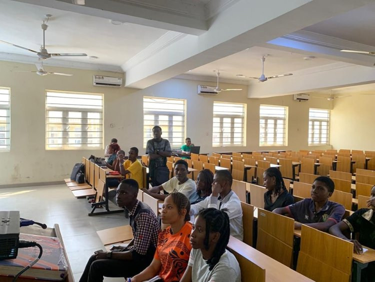

A sacred space dedicated to the holistic growth of the human
person through profound spiritual
reflection and comprehensive
religious formation.
Nurturing Mind and Spirit
Rooted in the rich intellectual and spiritual tradition of Marycenter is dedicated to the formation of the whole person. Our mission is to integrate faith and reason, fostering an environment where students pursue academic excellence while deepening their relationship with Christ.
We believe that education is not merely the acquisition of facts, but the
cultivation of wisdom and virtue. Our curriculum is designed to challenge the
intellect and inspire
the heart, preparing graduates to serve as lights in the
world.
Academic Programs
Diverse disciplines grounded in a coherent Christian worldview.
Psyco-spiritual
Deep study of Sacred Scripture, Tradition and the Magisterium.
Academy of Music
Preparing educators to teach with truth, charity,
and pedagogical
excellence.
Vocational
Hands-on training for skilled trades
focused on service and dignity
of work.
Why Choose Marycenter?
Faith-based Education
A holistic approach integrating Catholic values into
every
lesson.
Moral Discipline
Fostering character, responsibility, and ethical
leadership.
Qualified Teachers
Mentors who are experts in their fields and faithful to
the
Church.
Sacred Spaces
A glimpse into the environment where faith and humanity meet.

UPCOMING EVENT
Voice of Transformation
The retreat at Mary Center was a turning point in my life. I arrived seeking quiet but
left with a renewed sense of purpose and a deeper understandingof my faith and
humanity."
Theresa M. Williams
SPIRITUAL RETREAT PARTICIPANTAccount Details
7063337137
Bank: OPAY
EMMANUEL CHINECHEREM
OKAFOR